Notre galerie

Grand format contemporain Encadrement sur mesure Passe-partout Marie-Louise 
Œuvre graphique encadrée Cadre bois naturel Composition triptyque Encadrement museum 
Série photographique Cadre aluminium Nielsen Restauration et encadrement 
Objet encadré Galerie intérieure Moulure classique dorée Art contemporain 
Encadrement minimaliste Collection privée Format paysage 
Pièce signature
Une collection coup de cœur
Passionnés depuis plus de 30 ans, nous avons construit notre espace galerie autour d'œuvres choisies, encadrées et mises en lumière avec le même soin que celui porté à vos objets.
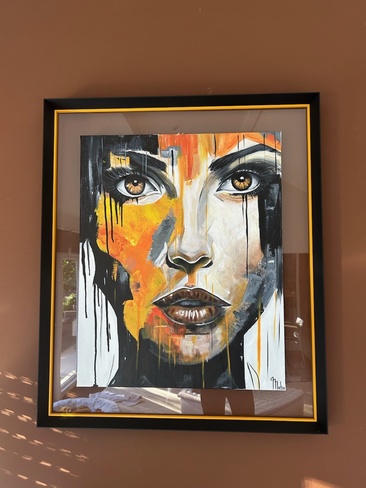
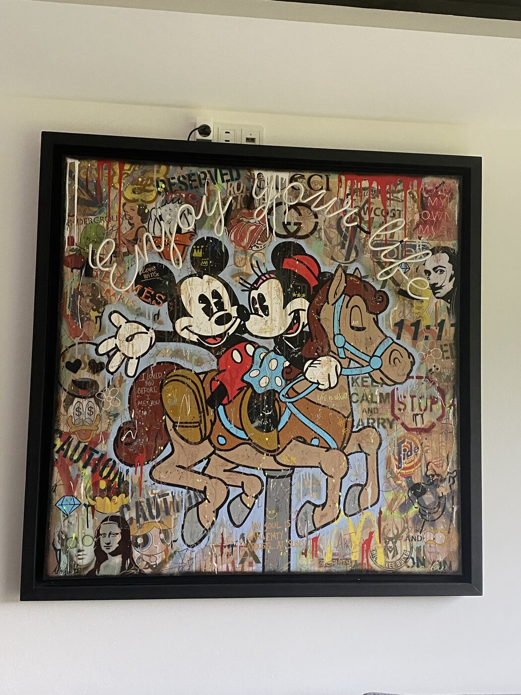
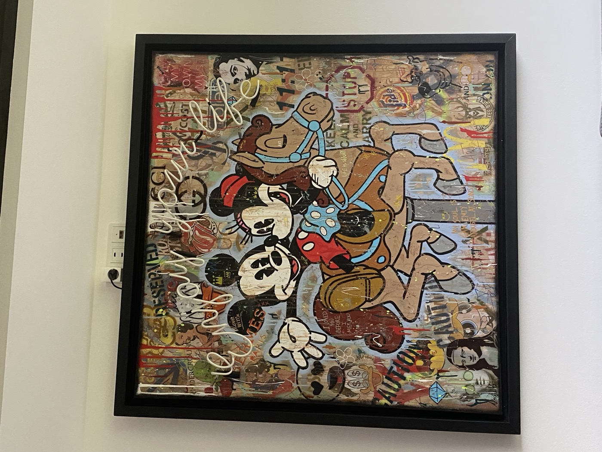
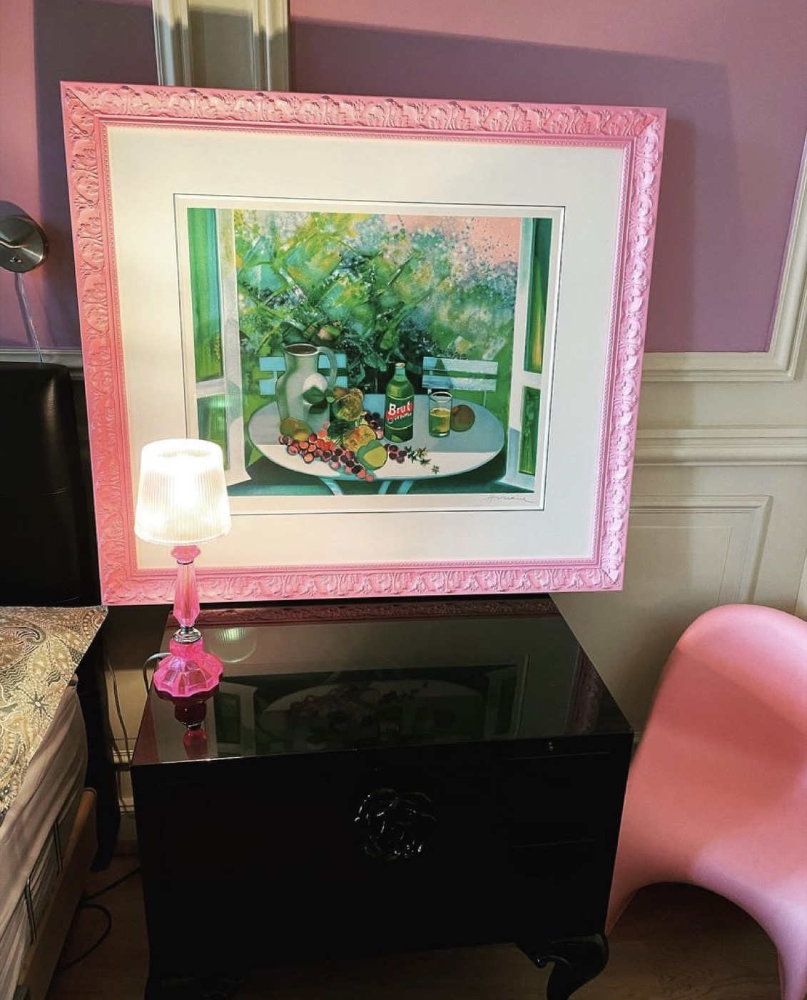
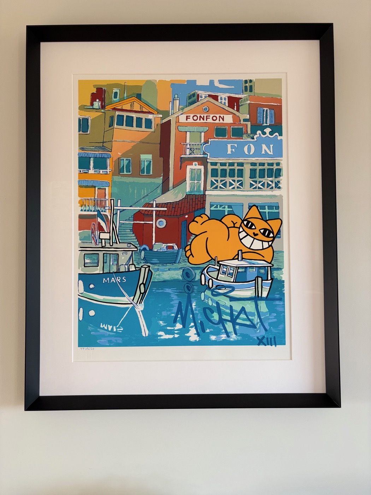
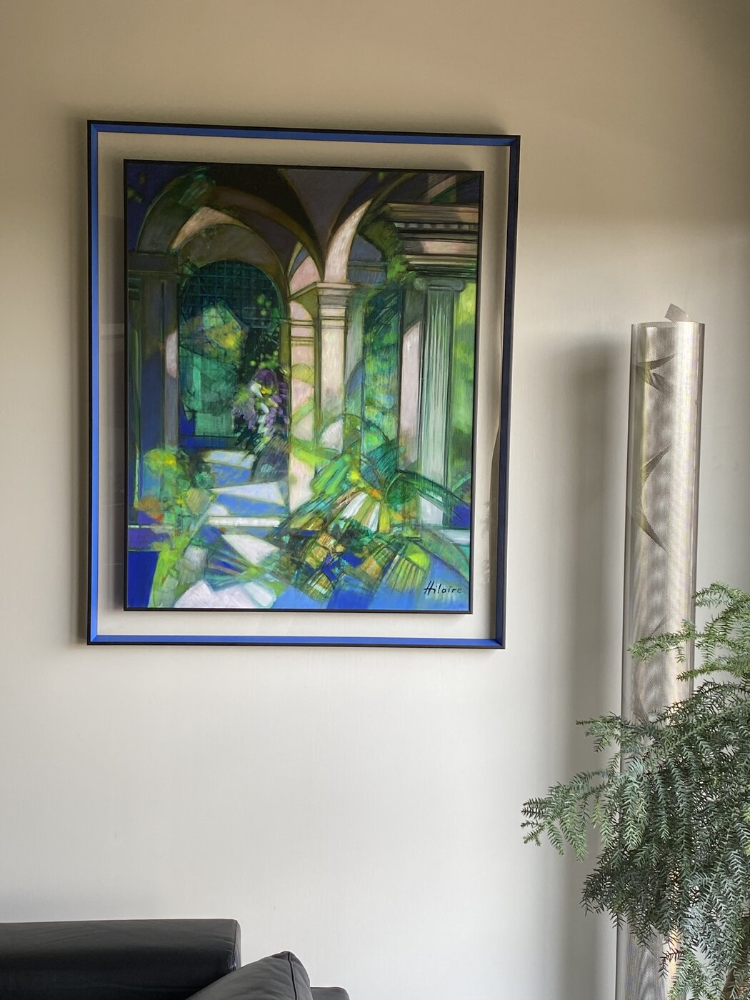
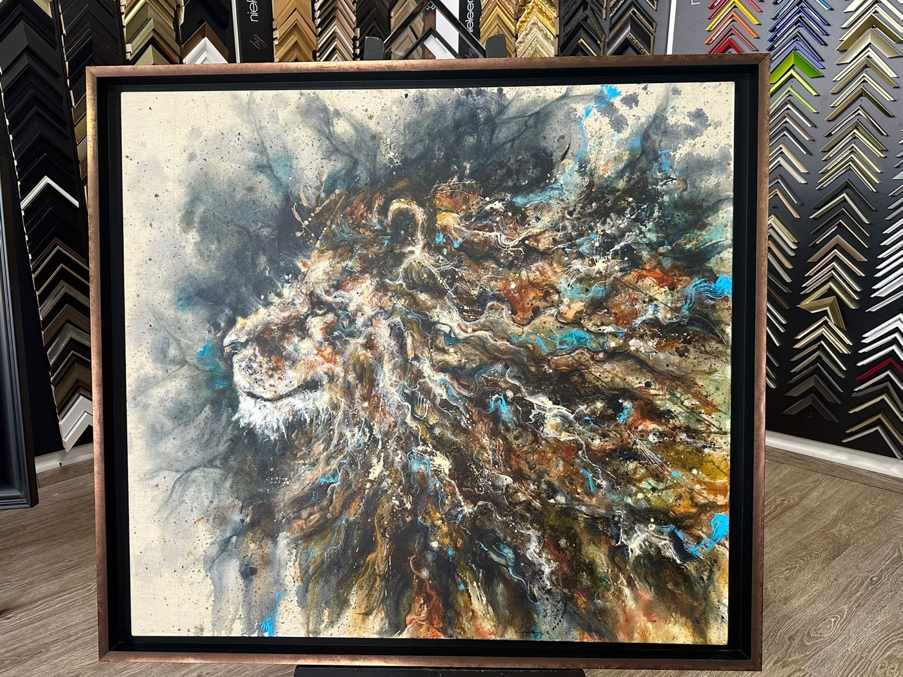
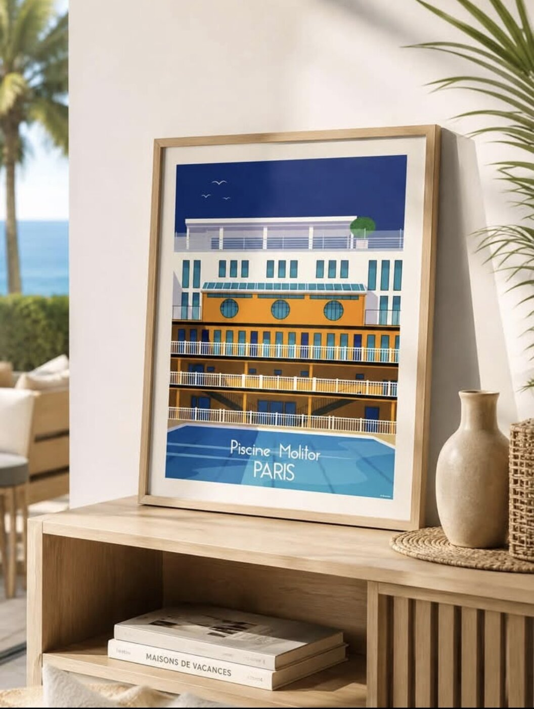
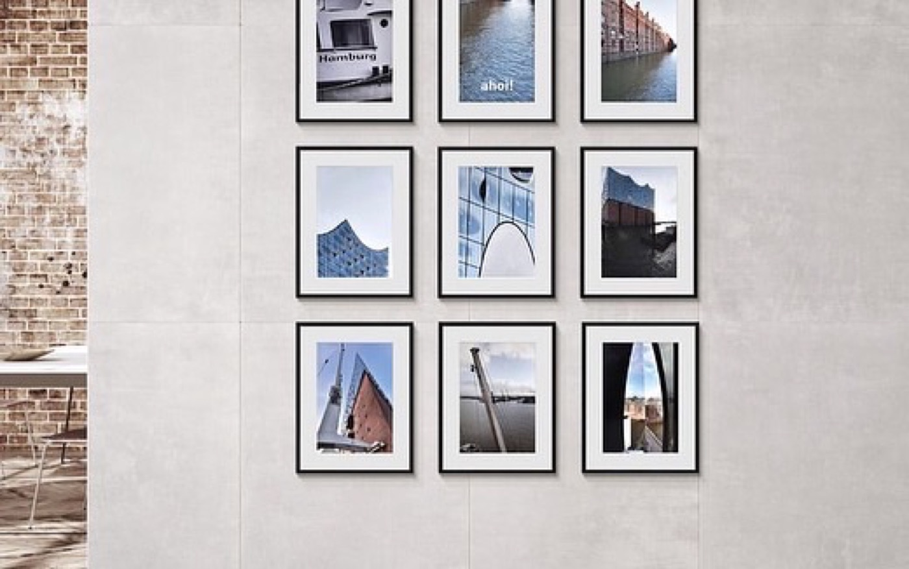
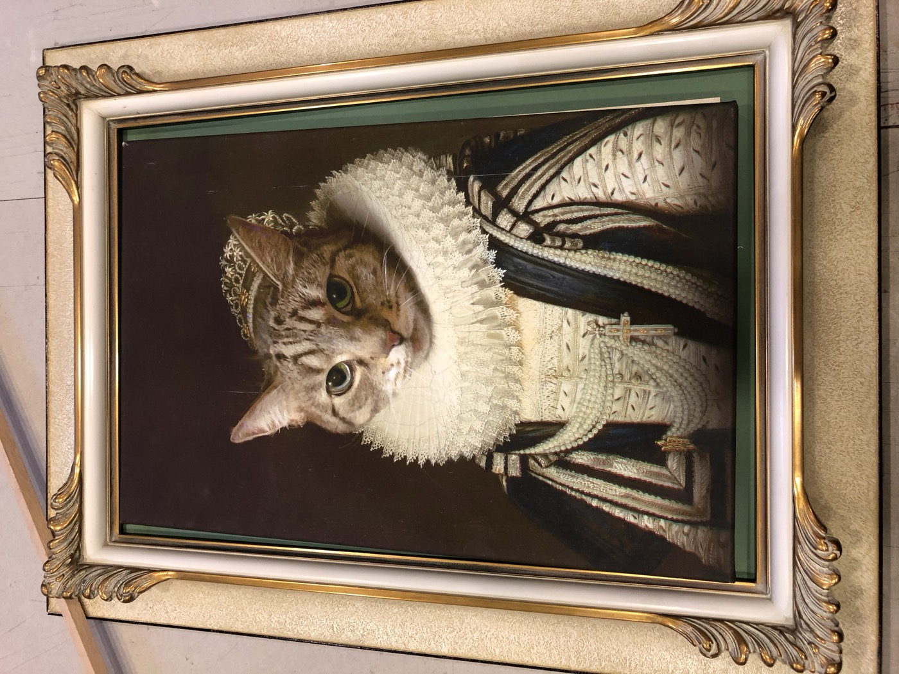
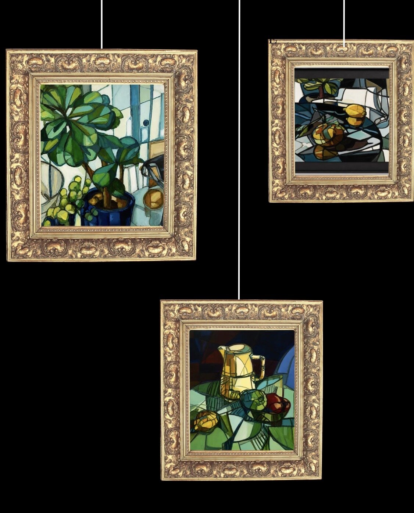
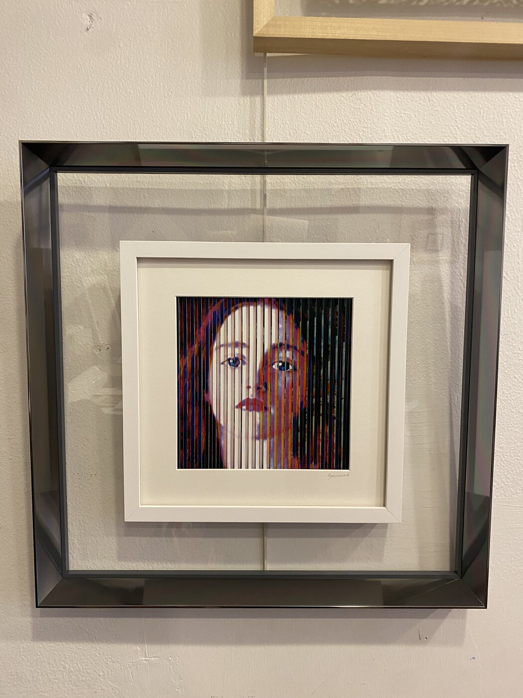